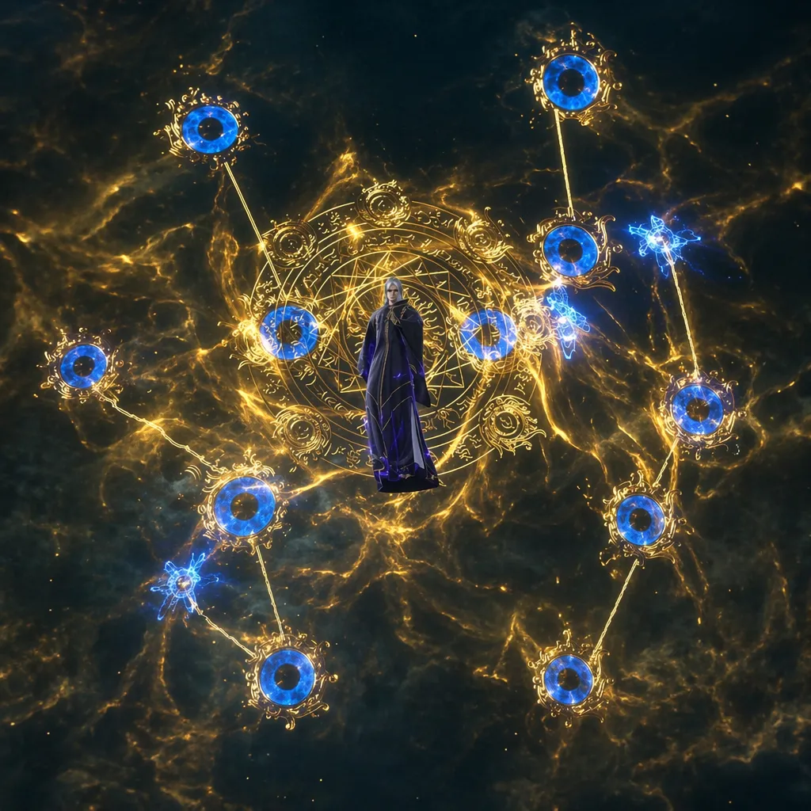

Before the awakeningThere was the fall.
NOT EVERY MONSTER IS A BEAST
Heaven above.
Ashes below.
It began with an Immortal battle in the sky. It ended with your village drowning in ash.
A dying uncle. An ancient scroll. A final warning: the monster wave was no accident. Someone ordered your world to burn.
Uncover the story
AN ORDER LEFT IN THE ASHES“Leave your post at Directive 38-EDH.”
The soldiers did not flee. They were ordered to let the village die.

02 / THE PRICE OF POWER
He gives you
power.
You owe him
a life.
The Immortal can awaken what sleeps in your blood. In return, he demands a way back to life.
The lineage that made you a target has become your bargaining power.
- YOU GAIN
- An awakened bloodline.
- HE SEEKS
- Resurrection.
POWER IS NEVER GIVEN
From mortal dust
to heaven’s equal.

Mortal Flesh
Wit, salvage, and steel. When you have nothing, every encounter matters.
Walk the mortal path ↗
The Scroll Trial
A celestial arena. A ruthless Immortal. Earn the right to become something more.
Enter the trial ↗
Qi Condensation
Open your meridians. Command arrays, flying swords, and elemental force.
Begin your ascension ↗BOUND BY MORE THAN FATE
No one ascends alone.


YOUR FIRST STEP INTO THE UNKNOWN
Every legend
begins with defiance.
The prologue is in development: a roughly 20-minute journey from the village ruins to your first awakening.
Get notified when it’s readyBEFORE YOU BEGIN
A few things
to know.
What kind of game is this?
A dark xianxia cultivation action-RPG. Survive a village massacre, unlock your hidden bloodline, and uncover the political conspiracy behind the attack.
Which platforms are planned?
PC (Windows) first, with Steam planned. Other platforms may be considered after the PC release.
When can I play the demo?
The roughly 20-minute vertical slice is in development. There is no release date yet. Use the notification link to hear when it is ready.
Is the prologue gameplay footage?
The interactive prologue tells the planned demo story through concept art. It contains story spoilers and is not a playable demo or gameplay footage.
How can I follow development?
Email zhekov.yane123@gmail.com with the subject “Notify me” to request a message when the demo is playable.